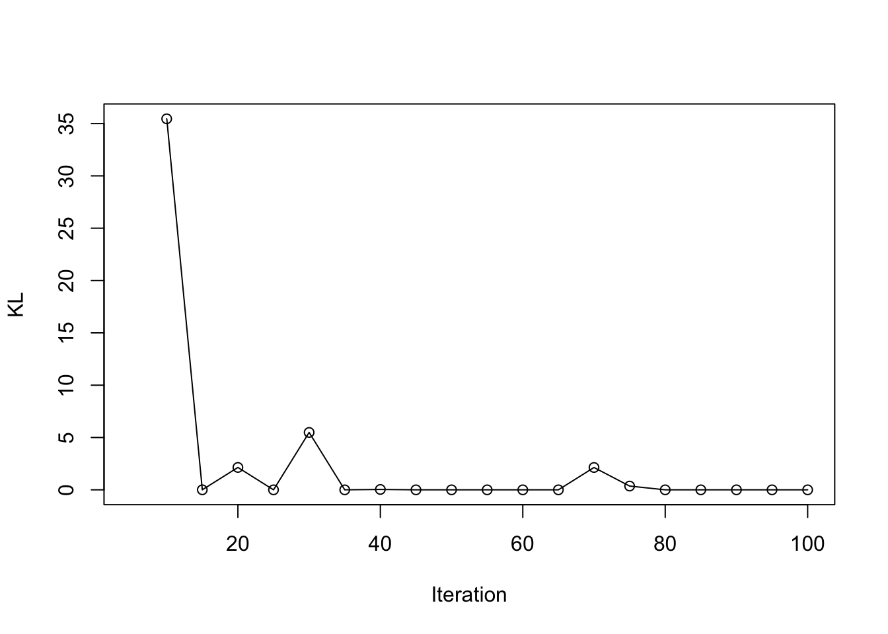
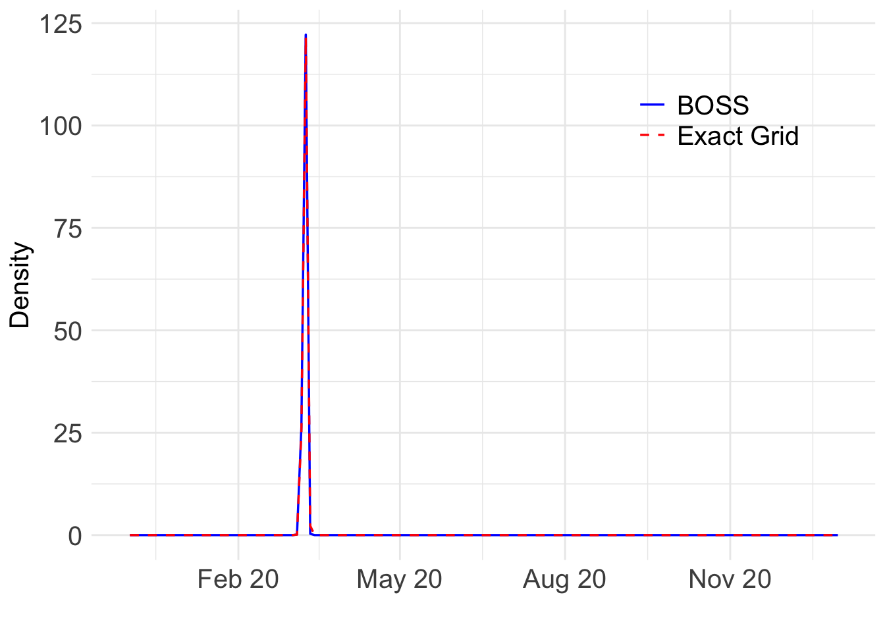

Example 2: Change Points in All-Cause Mortality
Ziang Zhang
2025-04-18
Last updated: 2025-04-21
Checks: 7 0
Knit directory: BOSS_website/
This reproducible R Markdown analysis was created with workflowr (version 1.7.1). The Checks tab describes the reproducibility checks that were applied when the results were created. The Past versions tab lists the development history.
Great! Since the R Markdown file has been committed to the Git repository, you know the exact version of the code that produced these results.
Great job! The global environment was empty. Objects defined in the global environment can affect the analysis in your R Markdown file in unknown ways. For reproduciblity it’s best to always run the code in an empty environment.
The command set.seed(20250415) was run prior to running
the code in the R Markdown file. Setting a seed ensures that any results
that rely on randomness, e.g. subsampling or permutations, are
reproducible.
Great job! Recording the operating system, R version, and package versions is critical for reproducibility.
Nice! There were no cached chunks for this analysis, so you can be confident that you successfully produced the results during this run.
Great job! Using relative paths to the files within your workflowr project makes it easier to run your code on other machines.
Great! You are using Git for version control. Tracking code development and connecting the code version to the results is critical for reproducibility.
The results in this page were generated with repository version 874c7ae. See the Past versions tab to see a history of the changes made to the R Markdown and HTML files.
Note that you need to be careful to ensure that all relevant files for
the analysis have been committed to Git prior to generating the results
(you can use wflow_publish or
wflow_git_commit). workflowr only checks the R Markdown
file, but you know if there are other scripts or data files that it
depends on. Below is the status of the Git repository when the results
were generated:
Ignored files:
Ignored: .DS_Store
Ignored: .Rhistory
Ignored: .Rproj.user/
Ignored: analysis/.DS_Store
Ignored: analysis/.Rhistory
Ignored: code/.DS_Store
Ignored: data/.DS_Store
Ignored: data/sim1/
Ignored: output/.DS_Store
Ignored: output/sim2/.DS_Store
Untracked files:
Untracked: code/co2_grid.R
Untracked: code/mortality_BG_grid.R
Untracked: code/mortality_NL_grid.R
Untracked: data/co2/
Untracked: data/mortality/
Untracked: output/co2/
Untracked: output/mortality/
Untracked: output/sim2/quad_sparse_list.rda
Unstaged changes:
Modified: BOSS_website.Rproj
Modified: code/00_BOSS.R
Modified: output/sim2/BO_data_to_smooth.rda
Modified: output/sim2/BO_result_list.rda
Modified: output/sim2/rel_runtime.rda
Note that any generated files, e.g. HTML, png, CSS, etc., are not included in this status report because it is ok for generated content to have uncommitted changes.
These are the previous versions of the repository in which changes were
made to the R Markdown (analysis/mortality.Rmd) and HTML
(docs/mortality.html) files. If you’ve configured a remote
Git repository (see ?wflow_git_remote), click on the
hyperlinks in the table below to view the files as they were in that
past version.
| File | Version | Author | Date | Message |
|---|---|---|---|---|
| Rmd | 874c7ae | Ziang Zhang | 2025-04-21 | workflowr::wflow_publish("analysis/mortality.Rmd") |
West Europe: Neitherlands
Data
library(tidyverse)── Attaching core tidyverse packages ──────────────────────── tidyverse 2.0.0 ──
✔ dplyr 1.1.4 ✔ readr 2.1.5
✔ forcats 1.0.0 ✔ stringr 1.5.1
✔ ggplot2 3.5.1 ✔ tibble 3.2.1
✔ lubridate 1.9.3 ✔ tidyr 1.3.1
✔ purrr 1.0.2
── Conflicts ────────────────────────────────────────── tidyverse_conflicts() ──
✖ dplyr::filter() masks stats::filter()
✖ dplyr::lag() masks stats::lag()
ℹ Use the conflicted package (<http://conflicted.r-lib.org/>) to force all conflicts to become errorslibrary(BayesGP)
library(npreg)Package 'npreg' version 1.1.0
Type 'citation("npreg")' to cite this package.set.seed(123)
noise_var = 1e-6
function_path <- "./code"
output_path <- "./output/mortality"
data_path <- "./data/mortality"
source(paste0(function_path, "/00_BOSS.R"))
cFile <- paste0(data_path, "/world_mortality.csv")
world_death = read.table(cFile, header = TRUE, sep = ",", stringsAsFactors = FALSE)
### West EU: NL
NL_death <- world_death %>% filter(country_name == "Netherlands")
NL_death$date <- make_date(year = NL_death$year) + weeks(NL_death$time)
NL_death$x <- as.numeric(NL_death$date)/365.25;
ref_val <- min(NL_death$x)
NL_death$x <- NL_death$x - ref_val
plot(NL_death$deaths ~ NL_death$date)BOSS
fit_once <- function(alpha, data){
a_fit <- alpha
data$x1 <- ifelse(data$x <= a_fit, (a_fit - data$x), 0);
data$x2 <- ifelse(data$x > a_fit, (data$x - a_fit), 0);
data$xx1 <- data$x1
data$xx2 <- data$x2
data$cov1 <- cos(2*pi*data$x)
data$cov2 <- sin(2*pi*data$x)
data$cov3 <- cos(4*pi*data$x)
data$cov4 <- sin(4*pi*data$x)
data$cov5 <- cos(8*pi*data$x)
data$cov6 <- sin(8*pi*data$x)
data$cov7 <- cos(16*pi*data$x)
data$cov8 <- sin(16*pi*data$x)
data$index <- 1:nrow(data)
mod <- model_fit(formula = deaths ~ cov1 + cov2 + cov3 + cov4 + cov5 + cov6 + cov7 + cov8 +
f(x1, model = "sGP", period = 1, sd.prior = list(param = list(u = 0.01, alpha = 0.5), h = 5), boundary.prior = list(prec = c(Inf, Inf, Inf, Inf, Inf, Inf, Inf, Inf)), k = 20, region = c(0,8), m = 4) +
f(x2, model = "sGP", period = 1, sd.prior = list(param = list(u = 1, alpha = 0.5), h = 5), boundary.prior = list(prec = c(Inf, Inf, Inf, Inf, Inf, Inf, Inf, Inf)), k = 20, region = c(0,8), m = 4) +
f(xx1, model = "IWP", order = 2, initial_location = "min",
sd.prior = list(param = 0.01, h = 5), k = 20, boundary.prior = list(prec = c(Inf))) +
f(xx2, model = "IWP", order = 2, initial_location = "min",
sd.prior = list(param = 1, h = 5), k = 20, boundary.prior = list(prec = c(Inf))),
data = data, method = "aghq", family = "Poisson", aghq_k = 4
)
mod
}
eval_once <- function(alpha, data = NL_death){
mod <- fit_once(alpha = alpha, data = data)
(mod$mod$normalized_posterior$lognormconst)
}
surrogate <- function(xvalue, data_to_smooth){
data_to_smooth$y <- data_to_smooth$y - mean(data_to_smooth$y)
predict(ss(x = as.numeric(data_to_smooth$x), y = data_to_smooth$y, df = length(unique(as.numeric(data_to_smooth$x))), m = 2, all.knots = TRUE), x = xvalue)$y
}
lower = 0.5; upper = 7.2
objective_func <- eval_onceeval_number <- 50
result_ad <- BOSS(eval_once,
update_step = 5, max_iter = eval_number, delta = 0.01,
lower = lower, upper = upper,
noise_var = noise_var,
initial_design = 5,
modal_iter_check = 5, modal_check_warmup = 20, modal_k.nn = 5, modal_eps = 0, criterion = "modal",
opt.lengthscale.grid = 100, opt.grid = 1000
)
data_to_smooth <- result_ad$result
data_to_smooth$x <- as.numeric(result_ad$result$x)[order(as.numeric(result_ad$result$x))]
data_to_smooth$x_original <- as.numeric(result_ad$result$x_original)[order(as.numeric(result_ad$result$x))]
data_to_smooth$y <- as.numeric(result_ad$result$y)[order(as.numeric(result_ad$result$x))]
data_to_smooth$y <- data_to_smooth$y - max(data_to_smooth$y)
ff <- list()
ff$fn <- function(y){
as.numeric(
surrogate(
y,
data_to_smooth = data_to_smooth
)
)
}
x_vals <- (seq(
from = lower,
to = upper,
length.out = 1000
) - lower) / (upper - lower)
fn_vals <- sapply(x_vals, ff$fn)
post_x <- data.frame(x = x_vals, fx = exp(fn_vals))
dx <- diff(x_vals)
integral_approx <- sum(0.5 * (post_x$fx[-1] + post_x$fx[-length(post_x$fx)]) * dx)
post_x$pos <- post_x$fx / integral_approx
BO_result_NL <- data.frame(x = (lower + x_vals * (upper - lower)),
pos = post_x$pos / (upper - lower))
BO_result_NL$year <- as.Date((BO_result_NL$x + ref_val)*365.25)
save(BO_result_NL, file = paste0(output_path, "/BO_result_NL.rda"))load(paste0(output_path, "/BO_result_NL.rda"))
ggplot() +
geom_line(data = BO_result_NL, aes(x = year, y = pos), color = "red", size = 1) +
xlab("") +
ylab("Density") +
scale_x_date(
limits = as.Date(c("2019-12-01", "2021-01-01")),
date_labels = "%b %y",
date_breaks = "3 month"
) +
theme_minimal() +
theme(text = element_text(size = 15), axis.text = element_text(size = 15)) Warning: Using `size` aesthetic for lines was deprecated in ggplot2 3.4.0.
ℹ Please use `linewidth` instead.
This warning is displayed once every 8 hours.
Call `lifecycle::last_lifecycle_warnings()` to see where this warning was
generated.Warning: Removed 838 rows containing missing values or values outside the scale range
(`geom_line()`).
Which day is most likely?
as.Date((BO_result_NL$x[which.max(BO_result_NL$pos)] + ref_val)*365.25)[1] "2020-03-07"Take a look at the fit:
my_alpha_NL <- (BO_result_NL$x[which.max(BO_result_NL$pos)])mod_NL <- fit_once(alpha = my_alpha_NL, data = NL_death)
save(mod_NL, file = paste0(output_path, "/mod_NL.rda"))load(paste0(output_path, "/mod_NL.rda"))
f1 <- predict(mod_NL, variable = "x1", only.samples = T, boundary.condition = "no", newdata = mod_NL$instances[[1]]@data, include.intercept = F)
f1$x <- my_alpha_NL - f1$x
f2 <- predict(mod_NL, variable = "x2", only.samples = T, boundary.condition = "no", newdata = mod_NL$instances[[1]]@data, include.intercept = F)
f2$x <- f2$x + my_alpha_NL
f1 <- distinct(f1, x, .keep_all = TRUE); f2 <- distinct(f2, x, .keep_all = TRUE)
f <- rbind(f1, f2) %>% arrange(x); f <- distinct(f, x, .keep_all = TRUE)
g1 <- predict(mod_NL, variable = "xx1", only.samples = T, boundary.condition = "no", newdata = mod_NL$instances[[1]]@data, include.intercept = F)
g1$x <- my_alpha_NL - g1$x
g2 <- predict(mod_NL, variable = "xx2", only.samples = T, boundary.condition = "no", newdata = mod_NL$instances[[1]]@data, include.intercept = F)
g2$x <- g2$x + my_alpha_NL
g1 <- distinct(g1, x, .keep_all = TRUE); g2 <- distinct(g2, x, .keep_all = TRUE)
g <- rbind(g1, g2) %>% arrange(x); g <- distinct(g, x, .keep_all = TRUE)
fixed_pred <- cbind(cos(2*pi*f$x), sin(2*pi*f$x), cos(4*pi*f$x), sin(4*pi*f$x), cos(8*pi*f$x), sin(8*pi*f$x), cos(16*pi*f$x), sin(16*pi*f$x), 1) %*% t(sample_fixed_effect(mod_NL, variables = c("cov1", "cov2", "cov3", "cov4", "cov5", "cov6", "cov7", "cov8", "intercept")))
f_all <- f[,-1] + fixed_pred + g[,-1]
f_summ <- data.frame(mean = apply(f_all, 1, mean), upper = apply(f_all, 1, quantile, 0.975), upper = apply(f_all, 1, quantile, 0.025))
par(cex.axis = 1.5, # Increase font size of axis text
cex.lab = 1.5, # Increase font size of axis labels
cex.main = 1.6) # Increase font size of main titles
matplot(y = exp(f_summ), x = as.Date((f$x+ ref_val)*365.25), type = "l", col = c("black","red", "red"), lty = c("solid", "dashed", "dashed"),
ylab = "Weekly Deaths", xlab = "")
abline(v = as.Date((my_alpha_NL+ ref_val)*365.25), lty = "dashed", col = "purple")
points(NL_death$deaths ~ as.Date((NL_death$x+ ref_val)*365.25), cex = 0.2, col = "black")
Exact grid
As the oracle method, we implement the exact grid approach with a equally spaced grid of 1000 points.
n_cores <- 12
# this returns a list of length length(x_vals)
res_list <- mclapply(x_vals, eval_once, mc.cores = n_cores)
exact_vals <- unlist(res_list)
# Close the progress bar
exact_grid_result_NL <- data.frame(x = x_vals, exact_vals = exact_vals)
exact_grid_result_NL$exact_vals <- exact_grid_result_NL$exact_vals - max(exact_grid_result_NL$exact_vals)
exact_grid_result_NL$fx <- exp(exact_grid_result_NL$exact_vals)
# Calculate the differences between adjacent x values
dx <- diff(exact_grid_result_NL$x)
# Compute the trapezoidal areas and sum them up
integral_approx <- sum(0.5 * (exact_grid_result_NL$fx[-1] + exact_grid_result_NL$fx[-length(exact_grid_result_NL$fx)]) * dx)
exact_grid_result_NL$pos <- exact_grid_result_NL$fx / integral_approx
save(exact_grid_result_NL, file = paste0(output_path, "/exact_grid_result_NL.rda"))East Europe: Bulgaria
Data
BG_death <- world_death %>% filter(country_name == "Bulgaria")
BG_death$date <- make_date(year = BG_death$year) + weeks(BG_death$time)
BG_death$x <- as.numeric(BG_death$date)/365.25;
ref_val <- min(BG_death$x)
BG_death$x <- BG_death$x - ref_val
plot(BG_death$deaths ~ BG_death$date)
BOSS
eval_once <- function(alpha, data = BG_death){
mod <- fit_once(alpha = alpha, data = data)
(mod$mod$normalized_posterior$lognormconst)
}
objective_func <- eval_onceresult_ad <- BOSS(eval_once,
update_step = 5, max_iter = eval_number, delta = 0.01,
lower = lower, upper = upper,
noise_var = noise_var,
initial_design = 5,
modal_iter_check = 5, modal_check_warmup = 20, modal_k.nn = 5, modal_eps = 0, criterion = "modal",
opt.lengthscale.grid = 100, opt.grid = 1000
)
data_to_smooth <- result_ad$result
data_to_smooth$x <- as.numeric(result_ad$result$x)[order(as.numeric(result_ad$result$x))]
data_to_smooth$x_original <- as.numeric(result_ad$result$x_original)[order(as.numeric(result_ad$result$x))]
data_to_smooth$y <- as.numeric(result_ad$result$y)[order(as.numeric(result_ad$result$x))]
data_to_smooth$y <- data_to_smooth$y - max(data_to_smooth$y)
ff <- list()
ff$fn <- function(y){
as.numeric(
surrogate(
y,
data_to_smooth = data_to_smooth
)
)
}
x_vals <- (seq(
from = lower,
to = upper,
length.out = 1000
) - lower) / (upper - lower)
fn_vals <- sapply(x_vals, ff$fn)
post_x <- data.frame(x = x_vals, fx = exp(fn_vals))
dx <- diff(x_vals)
integral_approx <- sum(0.5 * (post_x$fx[-1] + post_x$fx[-length(post_x$fx)]) * dx)
post_x$pos <- post_x$fx / integral_approx
BO_result_BG <- data.frame(x = (lower + x_vals * (upper - lower)),
pos = post_x$pos / (upper - lower))
BO_result_BG$year <- as.Date((BO_result_BG$x + ref_val)*365.25)
save(BO_result_BG, file = paste0(output_path, "/BO_result_BG.rda"))load(paste0(output_path, "/BO_result_BG.rda"))
ggplot() +
geom_line(data = BO_result_BG, aes(x = year, y = pos), color = "red", size = 1) +
xlab("") +
ylab("Density") +
scale_x_date(
limits = as.Date(c("2019-12-01", "2021-01-01")),
date_labels = "%b %y",
date_breaks = "3 month"
) +
theme_minimal() +
theme(text = element_text(size = 15), axis.text = element_text(size = 15)) Warning: Removed 838 rows containing missing values or values outside the scale range
(`geom_line()`).
Which day is most likely?
as.Date((BO_result_BG$x[which.max(BO_result_BG$pos)] + ref_val)*365.25)[1] "2020-09-01"Take a look at the fit:
my_alpha_BG <- (BO_result_BG$x[which.max(BO_result_BG$pos)])mod_BG <- fit_once(alpha = my_alpha_BG, data = BG_death)
save(mod_BG, file = paste0(output_path, "/mod_BG.rda"))load(paste0(output_path, "/mod_BG.rda"))
f1 <- predict(mod_BG, variable = "x1", only.samples = T, boundary.condition = "no", newdata = mod_BG$instances[[1]]@data, include.intercept = F)
f1$x <- my_alpha_BG - f1$x
f2 <- predict(mod_BG, variable = "x2", only.samples = T, boundary.condition = "no", newdata = mod_BG$instances[[1]]@data, include.intercept = F)
f2$x <- f2$x + my_alpha_BG
f1 <- distinct(f1, x, .keep_all = TRUE); f2 <- distinct(f2, x, .keep_all = TRUE)
f <- rbind(f1, f2) %>% arrange(x); f <- distinct(f, x, .keep_all = TRUE)
g1 <- predict(mod_BG, variable = "xx1", only.samples = T, boundary.condition = "no", newdata = mod_BG$instances[[1]]@data, include.intercept = F)
g1$x <- my_alpha_BG - g1$x
g2 <- predict(mod_BG, variable = "xx2", only.samples = T, boundary.condition = "no", newdata = mod_BG$instances[[1]]@data, include.intercept = F)
g2$x <- g2$x + my_alpha_BG
g1 <- distinct(g1, x, .keep_all = TRUE); g2 <- distinct(g2, x, .keep_all = TRUE)
g <- rbind(g1, g2) %>% arrange(x); g <- distinct(g, x, .keep_all = TRUE)
fixed_pred <- cbind(cos(2*pi*f$x), sin(2*pi*f$x), cos(4*pi*f$x), sin(4*pi*f$x), cos(8*pi*f$x), sin(8*pi*f$x), cos(16*pi*f$x), sin(16*pi*f$x), 1) %*% t(sample_fixed_effect(mod_BG, variables = c("cov1", "cov2", "cov3", "cov4", "cov5", "cov6", "cov7", "cov8", "intercept")))
f_all <- f[,-1] + fixed_pred + g[,-1]
f_summ <- data.frame(mean = apply(f_all, 1, mean), upper = apply(f_all, 1, quantile, 0.975), upper = apply(f_all, 1, quantile, 0.025))
par(cex.axis = 1.5, # Increase font size of axis text
cex.lab = 1.5, # Increase font size of axis labels
cex.main = 1.6) # Increase font size of main titles
matplot(y = exp(f_summ), x = as.Date((f$x+ ref_val)*365.25), type = "l", col = c("black","red", "red"), lty = c("solid", "dashed", "dashed"),
ylab = "Weekly Deaths", xlab = "")
abline(v = as.Date((my_alpha_BG+ ref_val)*365.25), lty = "dashed", col = "purple")
points(BG_death$deaths ~ as.Date((BG_death$x+ ref_val)*365.25), cex = 0.2, col = "black")Exact grid
n_cores <- 12
# this returns a list of length length(x_vals)
res_list <- mclapply(x_vals, eval_once, mc.cores = n_cores)
exact_vals <- unlist(res_list)
# Close the progress bar
exact_grid_result_BG <- data.frame(x = x_vals, exact_vals = exact_vals)
exact_grid_result_BG$exact_vals <- exact_grid_result_BG$exact_vals - max(exact_grid_result_BG$exact_vals)
exact_grid_result_BG$fx <- exp(exact_grid_result_BG$exact_vals)
# Calculate the differences between adjacent x values
dx <- diff(exact_grid_result_BG$x)
# Compute the trapezoidal areas and sum them up
integral_approx <- sum(0.5 * (exact_grid_result_BG$fx[-1] + exact_grid_result_BG$fx[-length(exact_grid_result_BG$fx)]) * dx)
exact_grid_result_BG$pos <- exact_grid_result_BG$fx / integral_approx
save(exact_grid_result_BG, file = paste0(output_path, "/exact_grid_result_BG.rda"))
sessionInfo()R version 4.3.1 (2023-06-16)
Platform: aarch64-apple-darwin20 (64-bit)
Running under: macOS Monterey 12.7.4
Matrix products: default
BLAS: /Library/Frameworks/R.framework/Versions/4.3-arm64/Resources/lib/libRblas.0.dylib
LAPACK: /Library/Frameworks/R.framework/Versions/4.3-arm64/Resources/lib/libRlapack.dylib; LAPACK version 3.11.0
locale:
[1] en_US.UTF-8/en_US.UTF-8/en_US.UTF-8/C/en_US.UTF-8/en_US.UTF-8
time zone: America/Chicago
tzcode source: internal
attached base packages:
[1] stats graphics grDevices utils datasets methods base
other attached packages:
[1] npreg_1.1.0 BayesGP_0.1.3 lubridate_1.9.3 forcats_1.0.0
[5] stringr_1.5.1 dplyr_1.1.4 purrr_1.0.2 readr_2.1.5
[9] tidyr_1.3.1 tibble_3.2.1 ggplot2_3.5.1 tidyverse_2.0.0
[13] workflowr_1.7.1
loaded via a namespace (and not attached):
[1] gtable_0.3.6 TMB_1.9.15 xfun_0.48 bslib_0.8.0
[5] ks_1.14.3 processx_3.8.4 lattice_0.22-6 callr_3.7.6
[9] tzdb_0.4.0 bitops_1.0-9 vctrs_0.6.5 tools_4.3.1
[13] ps_1.8.0 generics_0.1.3 aghq_0.4.1 fansi_1.0.6
[17] cluster_2.1.6 highr_0.11 fds_1.8 pkgconfig_2.0.3
[21] KernSmooth_2.23-24 Matrix_1.6-4 data.table_1.16.2 lifecycle_1.0.4
[25] compiler_4.3.1 farver_2.1.2 git2r_0.33.0 statmod_1.5.0
[29] munsell_0.5.1 getPass_0.2-4 mvQuad_1.0-8 httpuv_1.6.15
[33] rainbow_3.8 htmltools_0.5.8.1 sass_0.4.9 RCurl_1.98-1.16
[37] yaml_2.3.10 pracma_2.4.4 later_1.3.2 pillar_1.9.0
[41] crayon_1.5.3 jquerylib_0.1.4 whisker_0.4.1 MASS_7.3-60
[45] cachem_1.1.0 mclust_6.1.1 tidyselect_1.2.1 digest_0.6.37
[49] mvtnorm_1.3-1 stringi_1.8.4 splines_4.3.1 labeling_0.4.3
[53] pcaPP_2.0-5 rprojroot_2.0.4 fastmap_1.2.0 grid_4.3.1
[57] colorspace_2.1-1 cli_3.6.3 magrittr_2.0.3 utf8_1.2.4
[61] withr_3.0.2 scales_1.3.0 promises_1.3.0 timechange_0.3.0
[65] rmarkdown_2.28 httr_1.4.7 deSolve_1.40 hms_1.1.3
[69] evaluate_1.0.1 knitr_1.48 rlang_1.1.4 Rcpp_1.0.13-1
[73] hdrcde_3.4 fda_6.2.0 glue_1.8.0 rstudioapi_0.16.0
[77] jsonlite_1.8.9 R6_2.5.1 fs_1.6.4